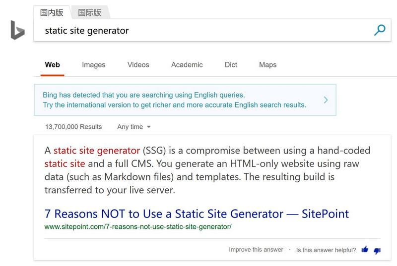
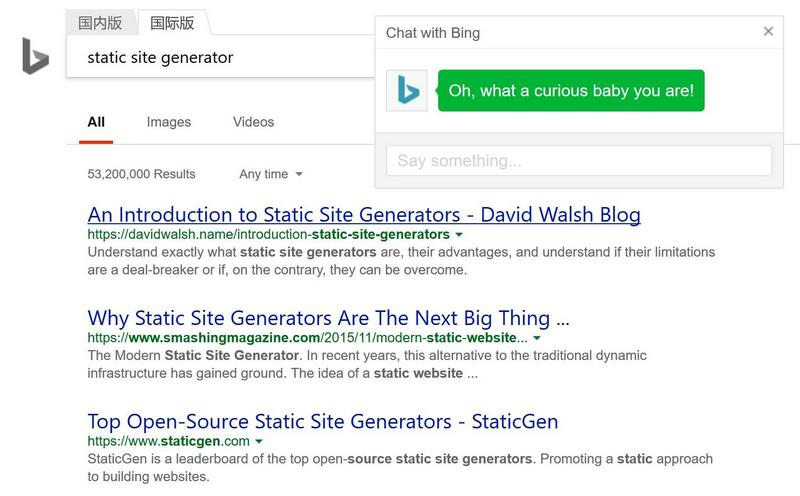

How to Disable Bing's Auto Translation
When you search with Bing International in China, you notice that Bing would produce a pop-up that contains the Chinese translation of the word that you happen to mouse over, that totally distracts you and that obscures what you want to see. (Bing International is a special version of Bing that conforms to censorship by China. Don't be fooled by the name.) There is a switch to turn this bug/feature off, but it enables itself again when you reload Bing. This `optimisation' for the Chinese gradually gets on your nerves. Here is a solution.
I use uBlock0 to block Ads already, so why not ask it to block whatever that is that produces the translations? After digging through the html/javascript code a bit with the help of developer's tools in Firefox, I found the culprit with the glaring name of HoverTranslation.js. Thus all I need to do is to add the following to the `My filters' configuration of uBlock0.
! Blocks Bing's auto translation www.bing.com/*/HoverTranslation.js
Off-topic:
It looks that I can keep a blog here. Thus I tried to learn how to automate some tedious repetitious parts on, oops, Bing China and received some discouragement.

On the other hand, Bing International gives me go.

To be honest, my friend in Boston said the real Bing also discouraged her.
Off-off-topic:
Let's pretend that we will have a non-static site. Wordpress is a good choice, but it has the record of being once blocked by GFW. Medium is currently being blocked because of the Panama Papers. Theoretically I can run whatever blog software I want on my own relay server, but it may get blocked at any time without prior notice and I definitely do not enjoy having to set up blog software again and again. Conclusion: GFW is severely limiting my options.